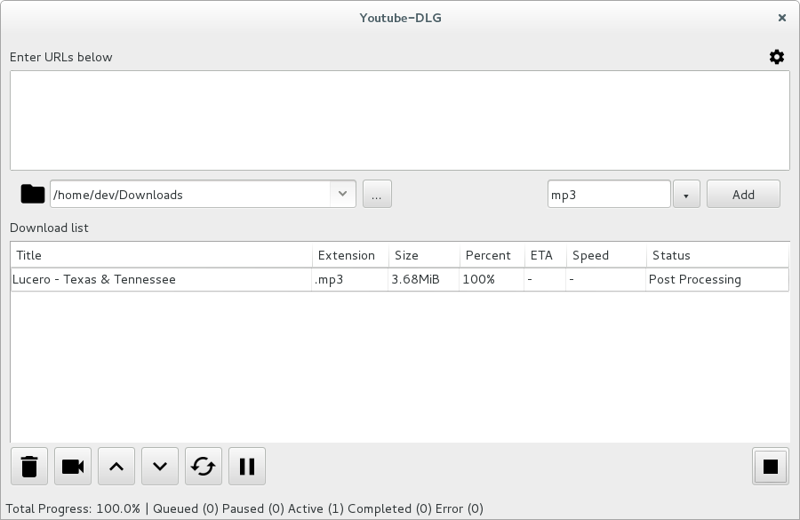

Description
A cross platform front-end GUI of the popular youtube-dl written in wxPython
Screenshots
Downloads
Requirements
Installation
| Source (Linux) | python setup.py install |
| PyPi (Linux) | pip install youtube-dlg |
| Windows | run setup.exe |
Contact
Email: ytubedlg@gmail.com